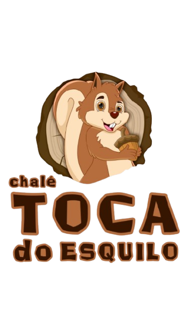
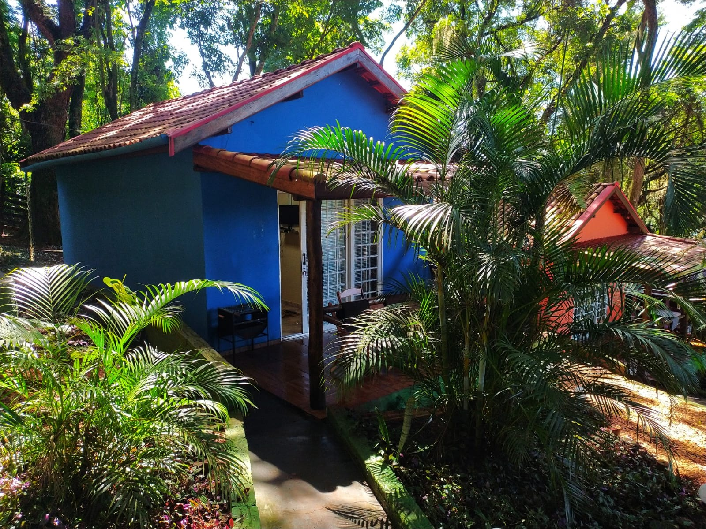
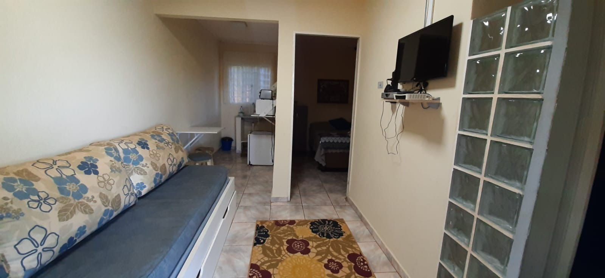
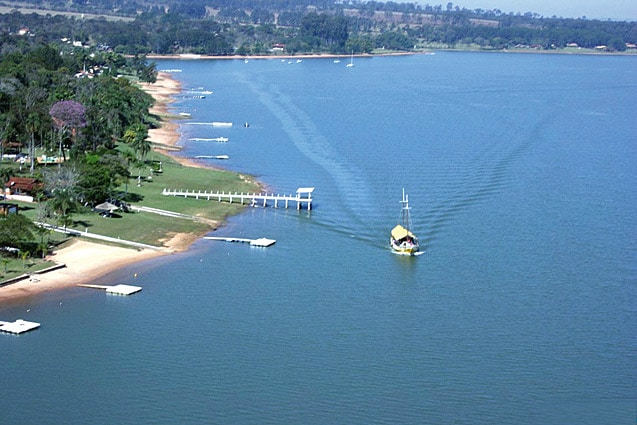

Toca do EsquiloDesconecte-se da rotina. Natureza, tranquilidade e lazer completo para toda a família em nossos chalés independentes.
Acesso direto à água
Exclusivos e independentes
Conexão em todo o espaço
Caiaque, pedalinho e piscina
Localizado em Arandu/SP, o Chalé Toca do Esquilo foi projetado para proporcionar momentos inesquecíveis com família e amigos. Acorde com o canto dos pássaros, tome um café na varanda sentindo a brisa da represa e termine o dia contemplando as estrelas.



A Represa de Jurumirim é famosa por suas águas limpas e cristalinas. Estar hospedado às margens dela significa ter acesso privilegiado a esportes náuticos ou simplesmente contemplar o pôr do sol mais bonito da região de Avaré e Arandu.
Ver Nossos ChalésA maior recompensa do nosso trabalho é a satisfação de quem escolhe a Toca do Esquilo.
"Lugar impecável fui na minha lua de mel cheio de energias boas,uma vista surreal muito aconchegante,e o atendimento mais perfeito ainda uma atenção.é de se admirar não vejo a hora de volta que deus abençoe 💕🥂"
"Minha experiência no local foi incrível desde a recepção até a saída, lugar perfeito para quem quer sair da bagunça da cidade grande"
"Lugar maravilhoso, tranquilo, no meio da natureza, com vários opções de lazer, ótima estadia, atendimento perfeito desde a reserva! Para quem procura um lugar para descansar e curtir a família, esse é o melhor!!! Com toda certeza irei voltar!"
Tudo o que você precisa saber antes de arrumar as malas.
Sim! Amamos animais e somos um espaço Pet Friendly. Seu amiguinho de quatro patas é muito bem-vindo para curtir a natureza com você.
Nosso check-in padrão se inicia a partir das 10h00 e o check-out deve ser realizado até as 16h00 do dia.
Nosso maior atrativo é o contato com a natureza e a tranquilidade. Por isso, não permitimos som automotivo ou caixas de som potentes. O uso de som ambiente em volume baixo é bem-vindo durante o dia, respeitando sempre o espaço dos outros hóspedes.
Estamos localizados às margens da Represa de Jurumirim, no Portal do Catavento em Arandu/SP.
Rua Joaquim Lopes da Fonseca, 16
Portal do Catavento
Arandu - SP